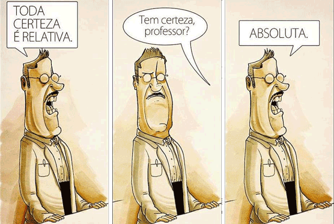
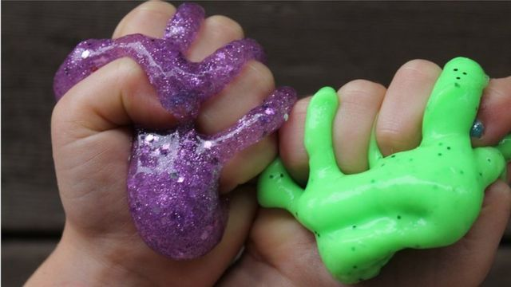
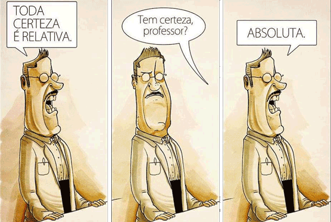
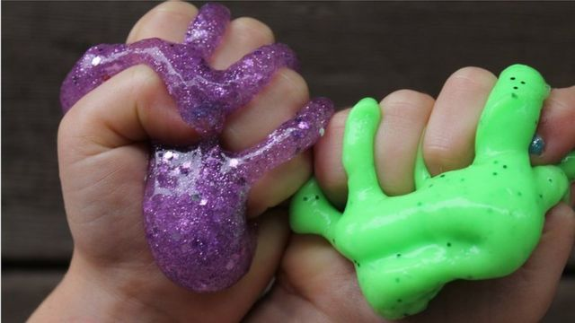

Em nosso trabalho sobre fatos do filme apresentado em Física, mergulhamos nas interseções intrigantes entre a sétima arte e os princípios científicos fundamentais. Ao explorar os elementos cinematográficos em paralelo com as leis da física, buscamos desvendar as representações fictícias e científicas que coexistem na narrativa cinematográfica. Este estudo nos convida a examinar de perto como o mundo do cinema pode desafiar, interpretar e, por vezes, amplificar os conceitos físicos que moldam nossa compreensão do universo.
Em uma envolvente aula de Química, exploramos a fascinante interseção entre a ciência e a diversão ao criar slime. Esse experimento prático, além de proporcionar uma experiência tátil e sensorial, permitiu que os estudantes mergulhassem nas propriedades químicas por trás da criação desse material viscoso. Ao manipular ingredientes simples, testar proporções e observar as reações químicas em tempo real, nossa aula transformou-se em uma jornada cativante pela química dos polímeros, evidenciando como conceitos científicos fundamentais podem ser explorados de maneira lúdica e acessível.
Em uma aula empolgante de Biologia, com foco especial nos moluscos.Para tornar o aprendizado ainda mais envolvente, decidimos abordar o tema de maneira lúdica e criativa, utilizando a icônica série de desenhos animados "Bob Esponja" como ponto de referência. Durante nossa apresentação, exploramos a diversidade e as características únicas dos moluscos, traçando paralelos divertidos com os personagens marinhos adoráveis que habitam o universo submarino de Bob Esponja

 


